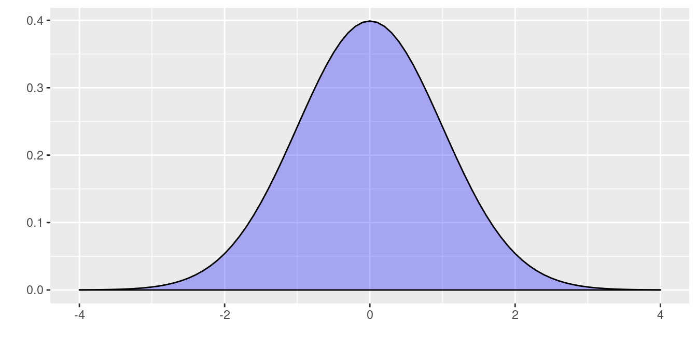
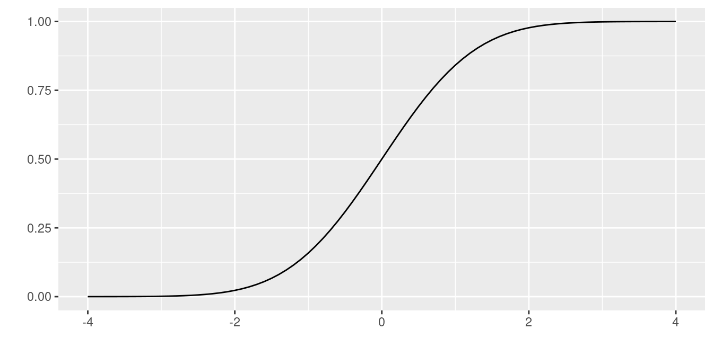

Variables aleatorias
Nivelatorio de Estadística
 Tomada de: https://pixabay.com/
Tomada de: https://pixabay.com/
El concepto de variable aleatoria constituye uno de los conceptos principales de la probabilidad y estadística. A este concepto se pueden asociar dos paradigmas de evolución histórica segun J.A. Alberth & B. Ruiz (2013) , El primero basada en el resultado de fenómenos aleatorios y por otro lado el proceso que relaciona los conjuntos de espacio muestral y sus respectivas probabilidades, para definir el concepto de variable aleatória como función de números reales y el espacio para el sustento matemático.
Variable aleatoria
Una variable aleatoria \(X\) es una función que asigna a cada valor de un espacio muestral \(S\) un numero . El conjunto formado por estos números conforman un subconjunto de los reales llamado rango de la variable X, (\(R_{_{X}}\))
Las variables aleatorias se clasifican teniendo en cuenta las características de su rango en DISCRETAS o CONTINUAS. La distribución de una variable aleatoria será UNIVARIADA si se estudia el comportamiento de una sola variable y serán MULTIVARIADA si se considera el comportamiento conjunto de varias variables definidas sobre el mismo espacio muestral.
Ahora una variable \(X\) se considera DISCRETA si su rango \(R_{_{X}}\) es un conjunto finito o infinito numerable de valores, por lo general procede del conteo y en la gran mayoria de casos empieza por número de…
Se considera variable aleatoria CONTINUA si su rango \(R_{_{X}}\) es un conjunto de valores infinito no numerable y generalmente corresponde a unión de intervalos. Estan asociadodas con la medición como son el tiempo, edad, precio, altura, distancia….
En todos los casos se caracterizan por :
Función de probabilidad
Esta función que asigna a cada valor de probabilidad \(f(x)\)
Caso discreto
Para el caso de discreto se denomina función de distribución de probabilidad \(f(x) = P(X = x)\) y debe cumplir las condiciones:
- \(f(x) = P(X=x) \geq 0\)
- \(\displaystyle\sum_{R_X} f(x) = 1\)
Caso continuo
Para el caso continuo se denomina función de densidad de probabilidad
- \(f(x) \geq 0\)
- \(\displaystyle\int\limits_{-\infty}^{+\infty}f(x)\:dx =1\)
- \(P(a < X < b)=\displaystyle\int\limits_{a}^{b}f(x)\:dx\)
Función de probabilidad acumulada
Corresponde a la probabilidad acumulada para valores menores o iguales a un valor \(x\) \(F(x)=P(X\leq x)\)
Caso discreto
\(F(x)=P(X\leq x)=\sum _{t \leq x}f(t)\)
Caso continuo
\(F_{_X}(x)=P(X \leq x)=\displaystyle\int \limits_{-\infty}^{x}f_{_X}(t)\:dt\)
\(F(x) = P(X \leq x) = P(X < x)\)
Valor Esperado
La esperanza matemática de una variable aleatoria X, corresponde a un valor que representa el valor más probable que ocurra o la media población de la variable aleatoria denotada por \(E[x]\) o tambien \(\mu\)
Caso discreto
\(E(X) = \displaystyle\sum\limits_{x}^{}x_{i}f(x_{i})\)
Caso continuo
\(E(X) = \displaystyle\int\limits_{-\infty}^{+\infty}x f(x)dx\)
Propiedades del Valor Esperado
\(E(k) = k\), para todo numero real \(k\).
\(E(kX) = k E(X)\), para todo número real \(k\).
\(E(aX + b) = a E(X) + b\), para todo par de números \(a\) y \(b\)
\(E(aX + bY) = a E (X) + b E(Y)\)
\(E(XY) = E(X)E(Y)\), unicamente en el caso que \(X\) e \(Y\) sean variables aleatorias independientes
Varianza
Sea \(X\) una variable aleatoria discreta o continua. El momento de orden \(k\) se define como:
Caso discreto
\(E(X^{k}) = \displaystyle\sum\limits_{x}^{}x_{i}^{k}f(x_{i})\)
Caso continuo
\(E(X^{k}) = \displaystyle\int\limits_{-\infty}^{+\infty}x^{k} f(x)dx\)
Se define la varianza como la diferencia entre el segundo momento y el cuadrado del primer momento
\(V[X] = E[X^{2}]-(E[X])^{2} = E[X^{2}]-\mu^{2}\)
Propiedades de la varianza
\(V[X] \geq 0\)
\(V[k] = 0\), para todo número real \(k\)
\(V[X + k] = V[X]\), para todo número real \(k\)
\(V[kX] = k^{2}V[X]\), para todo número real \(k\)
\(V[aX + bY] = a^{2}V[X] + b^{2}V[Y] + 2ab \hspace{.2cm}Cov[XY]\), siendo \(a\) y \(b\) números reales. En el caso se ser X y Y variables aleatorias independientes la igualdad será: \(V[aX + bY] = a^{2}V[X] + b^{2}V[Y]\)
Modelos de probabilidad especiales
| Bernoulli | Binomial | Poisson | Hipergeométrico | Geométrico | Binomial negativo |
| Uniforme | Normal | Exponencial | Gamma | Weibull | Cauchy |
| Lognormal | Beta | Erlang | Gumbel | Kernel | |
| t-Student | F de Fisher | Ji-cuadrado |
Código R
En \(R\) los nombre de las funciones diseñadas para los cálculos requeridos están conformadas por dos partes:
La primera parte es una letra que identifica el propósito de la
función.
d : función de distribución de probabilidad \(f(x)= P(X=x)\), para el caso discreto. En el caso de las variables continuas representa la función de densidad de probabilidad \(f(x)\)
p : función de probbilidad acumulada \(F(x) = P(X \leq x)\)
q : percentil \(X_p\)
r : generador de números aleatorios
La siguiene tabla presenta estas las funciones para los principales modelos tanto discretos como continuos
| modelo | \(F(x)\) | \(X_{p}\) | \(f(x)\) | aleatorio |
|---|---|---|---|---|
| binomial | pbinom | qbinom | dbinom | rbinom |
| gometrico | pgeom | qgeom | dgeom | rgeom |
| hipergeometrico | phyper | qhyper | dhyper | rhyper |
| Poisson | ppois | qpois | dpois | rpois |
| binomial negativo | pnbinom | qnbinom | dnbionom | rnbinom |
| beta | pbeta | qbeta | dbeta | rbeta |
| Cauchy | pcauchy | qcauchy | dcauchy | rcauchy |
| exponencial | pexp | qexp | dexp | rexp |
| gamma | pgamma | qgamma | dgamma | rgamma |
| lognormal | plnorm | qlnorm | dlnorm | rlnorm |
| uniforme | punif | qunif | dunif | runif |
| Weibull | pweibull | qweibull | dweibull | rweibull |
| t-Student | pt | qt | dt | rt |
| Ji-cuadrado | pchisq | qchisq | dchisq | rchisq |
| F | pf | qf | df | rf |
En R los nombres de las funciones diseñadas para los cálculos requeridos están conformadas por dos partes: la primera parte con el propósito de la función (primera letra) y la segunda parte hace referencia al modelo a utilizar (d binom para el calculo de probabilidad de una variable aleatoria con distribución binomial)
En cada caso si no recuerda las sintaxis de la función puede hacer uso de las ayudas de R así:
help("pbinom")| p | función de distribución acumulada \(F(x)\) |
| q | percentil |
| d | densidad de probabilidad \(P(X=x)\) |
| r | variable aleatoria |
Ejemplo 1
Sea una variables con distribución binomial con parámetros \(n=20\) y \(p=0.30\) , lo cual se puede simbolizar como : \(X\sim b(x; 20,0.30)\)
En este caso se requieren realizar los siguientes procesos:
- Calcular la probabilidad de \[ P(X=7) = \dbinom{20}{7} 0.30^{7} (10.30)^{(20-7)}\]
dbinom(7, 20, 0.30)[1] 0.164262- Calcular la probabilidad acumulada \[P(X \leq 7) = \displaystyle\sum_{x=0}^{x=7} \dbinom{20}{x} 0.30^{x} (1-0.30)^{(20-x)}\]
pbinom(7, 20, 0.30)[1] 0.7722718- Generar 15 números aleatorios a partir de esta distribución
rbinom(15,20,0.30) [1] 4 7 7 7 8 7 2 4 7 6 7 6 5 9 5- Para construir una gráfica se puede utilizar el siguiente código
library(ggplot2)
x=0:20
fx=dbinom(x,20,0.30)
dat=data.frame(x,fx)
ggplot(dat) + geom_point(aes(x, fx),colour = "orange", size = 4) +
scale_x_continuous(limits = c(0, 20),
breaks = 0:20,
labels = c('0','1','2','3','4','5','6','7','8','9','10','11','12','13','14', '15','16','17','18','19','20'))
Ejemplo 2
Ahora supongamos que se tiene una variable continua con distribución normal, con media 50 y varianza 100, es decir desviación estándar 10, lo cual se puede representar como \(X\sim N(50,100)\).
En este caso vamos a hallar los siguientes valores:
- Calcular la probabilidad de que un valor de \(X\) sea menor o igual a 70, \[P(X<70) =\displaystyle\int_{-\infty}^{70} \dfrac{1}{\sqrt{200 \pi }} \exp{\frac{1}{200 }(x-50)^{2}} \:dx\]
pnorm(70,50,sqrt(100))[1] 0.9772499- Calcular la probabilidad de que la variable sea mayor a 70: \(P(X>70)\)
pnorm(70,50,sqrt(100),lower.tail=FALSE)[1] 0.02275013- Genere 10 números aleatorios de la variables \(X\)
rnorm(10,70,sqrt(100)) [1] 79.83404 63.77543 62.68464 64.83330 52.49267 78.80104 83.70010 53.12673
[9] 63.72564 70.18317- Para realizar un gráfico podemos utilizar el siguiente código
# install.package("ggfortify")
library(ggfortify)
ggdistribution(dnorm, seq(-4, 4, 0.1), mean = 0, sd = 1,fill = 'blue')
# install.package("ggfortify")
library(ggfortify)
ggdistribution(pnorm, seq(-4, 4, 0.1), mean = 0, sd = 1)